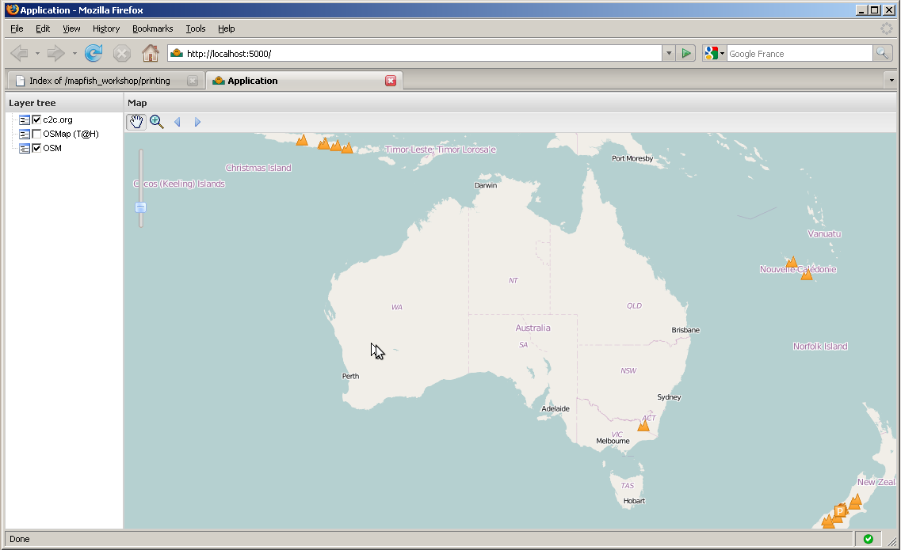
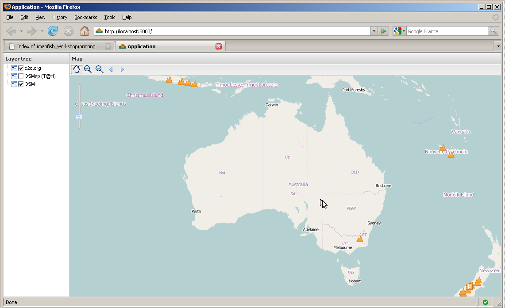

Au sein de ce chapitre vous aller personnaliser l’interface utilisateur proposée par défaut, en y intégrant vos propres outils et couches d’informations. Cette étape de travail nécessitera la mise en place de code JavaScript au sein du fichier layout.js.
Vous allez maintenant ajouter une couche WMS à votre carte.
Programmation
Éditez le fichier mapfishapp_layout.js et ajoutez un objet OpenLayers.Layer.WMS au niveau du tableau des couches retourné par la fonction createLayers. Voici le code vous permettant de créer l’objet OpenLayers.Layer.WMS :
new OpenLayers.Layer.WMS(
"c2c.org",
"http://www.camptocamp.org/cgi-bin/mapserv_c2corg",
{
layers: 'summits,routes,huts,parkings,sites',
format: 'png',
transparent: true
}, {
singleTile: true
}
)
L’objet OpenLayers.Layer.WMS est un nom prédéfinis comprenant, une adresse URL vers le serveur WMS, les paramètres du serveur WMS, ainsi que quelques options. L’option singleTile indique que la couche doit être affichée par une seule image contrairement à une grille d’image tuilées. Pour plus de détail concernant les différentes classes d’ OpenLayers.Layers.WMS, parcourez le document classe OpenLayers.Layer.WMS [1] .
Note
Le service WMS utilisé ici est proposé par l’organisme sans but lucratif camptocamp.org [2].
Après avoir rechargé l’application au sein de votre navigateur, vous devriez obtenir ceci :
Si vous souhaitez visualiser plus de sommets, de routes, de parkings ou d’autres types d’informations sur votre carte d’Espagne, merci de contribuer au projet de http://www.camptocamp.org :-)
Le code que vous venez d’intégrer ne fait appel qu’à la librairie d’OpenLayers, aucun code de type GeoExt ou MapFish n’a été écris ou utilisé jusqu’à maintenant.
Vous allez maintenant agrémenter l’outil Zoom - aux cotés de l’outil Zoom + au sein de la barre d’outils de votre carte.
Programmation
Éditez à nouveau le fichier layout.js, consultez la fonction createTbarItems, et intégrez y un nouvel objet GeoExt.Action au sein du tableau actions retourné par la fonction. Voici le code vous permettant de créer ce nouvel objet GeoExt.Action.
actions.push(new GeoExt.Action({
iconCls: "zoomout",
map: map,
toggleGroup: "tools",
allowDepress: false,
tooltip: "Zoom out",
control: new OpenLayers.Control.ZoomBox({
out: true
})
}));
Ce code génère un objet GeoExt.Action configuré avec une instance OpenLayers.Control.ZoomBox. Ce code ressemble parfaitement à l’outil Zoom -, seules les options diffèrent pour le contrôle out définis comme false pour le Zoom + et true pour le Zoom -. Pour plus de détail consultez les documents GeoExt.Action [3] et OpenLayers.Control.ZoomBox doc [4] (le dernier document est en fait incomplet, focalisez vous sur le premier :P).
Nous avons aussi besoin de CSS dans le fichier mapfishapp/public/app/css/main.css :
.zoomout {
background-image:url(../img/icon_zoomout.png) !important;
height:20px !important;
width:20px !important;
}
Après avoir rechargé l’application au sein de votre navigateur, vous devriez obtenir ceci :
Dans ce module vous avez appris à utiliser les objets GeoExt.Action en association avec les objets OpenLayers.Control afin d’ajouter une fonctionalité au sein de la barre d’outil.
Bonus
Intégrez les outils zoom to max extent et draw polygons à votre barre d’outils. Ajouter l’outil draw polygons à votre application nécessite l’intégration d’une couche OpenLayers.Layer.Vector au sein de la liste des couches retournées par la fonction createLayers. Jeter un œil à l’exemple toolbar.html de GeoExt, [5] peut vous aider dans votre démarche.
| [1] | http://dev.openlayers.org/apidocs/files/OpenLayers/Layer/WMS-js.html |
| [2] | http://www.camptocamp.org |
| [3] | http://www.geoext.org/lib/GeoExt/widgets/Action.html |
| [4] | http://dev.openlayers.org/apidocs/files/OpenLayers/Control/ZoomBox-js.html |
| [5] | http://dev.geoext.org/trunk/geoext/examples/toolbar.html |